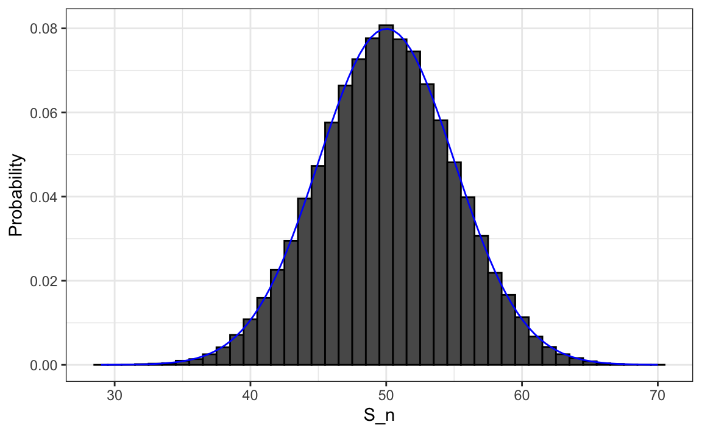

7 Random Variables
Most datasets we work with are subject to chance, whether from random sampling, measurement error, or inherently stochastic processes. Quantifying the uncertainty introduced by this randomness is one of the most important responsibilities of a data analyst. Statistical inference (the topic of the next part of this book) provides both the framework and the tools to do just that. The first step is learning how to describe random variables mathematically. In this chapter, we introduce random variables and their key properties using simple examples.
7.1 Definition
Statistical inference begins with the concept of a random variable, a numerical quantity whose value depends on the outcome of a random process. Random variables connect probability theory to data analysis by giving us a way to describe uncertainty mathematically. Once we define a random variable, we can study its distribution, compute its expected value and variability, and use it to make probability-based statements about future or unseen outcomes.
In this chapter, we focus on cases in which the probability distribution of the random variable is completely known. These are idealized settings, such as games of chance, where probabilities are determined by the rules of the game rather than by data. Working with these simple, controlled examples allows us to understand the mathematical foundations of probability, expected values, standard errors, and sampling distributions.
In later chapters, we will turn to real-world data problems, where the underlying distributions are not known. In those cases, we use statistical inference to estimate or approximate these distributions from data. The probability concepts introduced here provide the theoretical foundation for those inferential methods.
To start, consider a simple discrete example. Suppose we draw one bead at random from an urn containing red and blue beads. Define the random variable:
\[ X = \begin{cases} 1 & \text{if the bead is blue},\\ 0 & \text{if the bead is red.} \end{cases} \]
In R, we can simulate this process using the code we introduced in Section 5.3:
Each time we draw a bead, the value of \(X\) may change because the outcome is random. A variable like this, which takes only the values 0 and 1, is called a Bernoulli random variable in statistical textbooks. Bernoulli trials are the building blocks for many statistical models, since many outcomes, such as success/failure, yes/no, or heads/tails—can be represented this way.
A classic example is the number of heads, call it \(S_n\), observed when tossing \(n\) fair coins. We can generate one observation of this random variable using a simulation:
We will use this example in later sections.
Not all random variables are discrete. Some can take on a continuum of values. For example, the height of a randomly selected person or the result of a physical measurement can be viewed as a continuous random variable. We can simulate such a variable using the normal distribution:
x <- rnorm(10, mean = 70, sd = 3)Here each value of x represents one realization of a random variable drawn from a normal distribution with mean 70 and standard deviation 3. Repeating the simulation produces slightly different numbers each time, reflecting the inherent randomness of the process.
These examples, discrete Bernoulli variables and a continuous normal variable, illustrate the main types of random variables we will study in this chapter. Understanding their behavior and summarizing their distributions are the key steps that lead us toward the ideas of expected value, variability, and, ultimately, statistical inference.
7.2 Notation for Random Variables
In statistical notation, uppercase letters denote random variables, while lowercase letters represent observed values. Sometimes both appear together, as in \(X \leq x\), where \(X\) is random and \(x\) is a fixed value. For example, \(X\) might represent the number shown on a die roll, and \(x\) an observed outcome, 1, 2, 3, 4, 5, or 6:
\[ \mathrm{Pr}(X = x) = 1/6 \quad \text{for } x = 1, \dots, 6. \]
This notation is convenient because it lets us express probability statements compactly. It may seem odd at first, since \(X\) represents an outcome not yet observed, we can discuss the likelihood of its possible values, but not its realized value. Once data are collected, we observe one realization of \(X\), and then reason about what could have occurred, given what did occur.
7.3 The Probability Distribution of a Random Variable
The probability distribution of a random variable tells us how likely each possible outcome is. For example, if we toss \(n\) fair coins, we might ask for the probability of observing 40 or fewer heads. This is equivalent to asking for \(\mathrm{Pr}(S_n \leq 40)\).
If we can define a cumulative distribution function (CDF) \(F(a) = \mathrm{Pr}(S_n \leq a)\), we can answer any probability question involving \(S_n\), such as the probability of falling within an interval \((a, b]\). We call \(F\) the distribution function of the random variable.
We can approximate this distribution function by Monte Carlo simulation. For example, the following code simulates tossing 100 fair coins 100,000 times:
We can then estimate \(\mathrm{Pr}(S_n \leq a)\) by computing the proportion of simulated values less than or equal to a:
mean(s <= a)For instance, the probability of observing 40 or fewer heads out of 100 is:
mean(s <= 40)
#> [1] 0.028We can visualize the distribution of \(S_n\) with a histogram, overlaying the corresponding normal density curve for comparison:

We see that the distribution is approximately normal. A qqplot will confirm that the normal approximation provides an excellent fit. In the next chapter (Section 8.3), we will learn the theory that explains why this approximation works so well. In fact, this result extends far beyond coin flips, it applies broadly to averages and sums of many kinds of random variables.
If the distribution is normal, it is fully characterized by its average and standard deviation. These two quantities have special names in probability theory: the expected value and the standard error of the random variable. We discuss these next.
Statistical theory lets us derive the exact distribution of random variables defined as sums of independent draws from an urn. In our coin tossing example, the number of heads (successes), \(S_n\), follows a binomial distribution. Thus, Monte Carlo simulations were used only for illustration.
We can compute probabilities directly with dbinom or pbinom. For example, to find \(\mathrm{Pr}(S_n \leq 40)\):
pbinom(40, size = n, prob = 1/2)
#> [1] 0.0284We can also simnulate the number of heads using a rbinom instead of replicate and sample:
rbinom(B, n, 1/2)7.4 The Expected Value and Standard Error
In statistics textbooks, the expected value of a random variable \(X\) is commonly denoted as \(\mu_X\) or \(\mathrm{E}[X]\), both meaning “the expected value of \(X\).”
Intuitively, the expected value represents the long-run average outcome if the random process were repeated many times. The more repetitions, the closer the average of the observed values will be to \(\mathrm{E}[X]\).
For a discrete random variable with possible outcomes \(x_1,\dots,x_n\), the expected value is defined as:
\[ \mathrm{E}[X] = \sum_{i=1}^n x_i ,\mathrm{Pr}(X = x_i) \]
For a continuous random variable with probability density function \(f(x)\) and range \((a, b)\), the sum becomes an integral:
\[ \mathrm{E}[X] = \int_a^b x f(x), dx \]
If all \(x_i\) have equal probability \(1/n\), as when drawing uniformly from an urn, the expected value reduces to the arithmetic mean:
\[ \mathrm{E}[X] = \frac{1}{n}\sum_{i=1}^n x_i. \]
For example, in a coin toss where \(X = 1\) for heads and \(0\) for tails,
\[ \mathrm{E}[X] = 1 \times \Pr(X=1) + 0 \times \Pr(X=0) = 1/2. \]
Although \(X\) only takes the values 0 or 1, its expected value of 0.5 represents the long-run proportion of heads if the experiment were repeated many times:
The standard error (SE) describes the typical deviation of \(X\) from its expected value. It is defined as:
\[ \mathrm{SE}[X] = \sqrt{\sum_{i=1}^n (x_i - \mathrm{E}[X])^2 ,\mathrm{Pr}(X = x_i)}. \]
For a continuous random variable with density \(f(x)\), this becomes:
\[ \mathrm{SE}[X] = \sqrt{\int_a^b (x - \mathrm{E}[X])^2 f(x), dx}. \]
Many textbooks introduce the variance before the standard error. The variance is simply the square of the standard error:
\[ \mathrm{Var}[X] = \mathrm{SE}[X]^2. \]
Variance is useful in derivations because it avoids square roots, but the standard error is easier to interpret, since it uses the same units as the data.
When all outcomes \(x_i\) are equally likely, the standard error reduces to the standard deviation:
\[ \mathrm{SE}[X] = \sqrt{\frac{1}{n}\sum_{i=1}^n (x_i - \mathrm{E}[X])^2}, \quad \mathrm{E}[X] = \frac{1}{n}\sum_{i=1}^n x_i. \]
For a coin toss:
\[ \mathrm{SE}[X] = \sqrt{(1-0.5)^2 \times 0.5 + (0-0.5)^2 \times 0.5} = 0.5. \]
Thus, one coin has an expected value of 0.5 and a standard error of 0.5—reasonable, since the possible outcomes are 0 or 1.
We use the Greek letters \(\mu\) and \(\sigma\) to denote the expected value and standard error, respectively. This convention reflects their connection to the mean (\(m\)) and standard deviation (\(s\)). However, we often prefer \(\mathrm{E}[X]\) and \(\mathrm{SE}[X]\) notation because it generalizes more clearly to mathematical expressions involving sums or transformations of random variables.
7.5 Key Properties of Expectations and Standard Errors
There are several mathematical properties of expectations and standard errors that we will use frequently when working with data.
1. The expected value of the sum of random variables is the sum of each random variable’s expected value. We can write it like this:
\[ \mathrm{E}[X_1+X_2+\dots+X_n] = \mathrm{E}[X_1] + \mathrm{E}[X_2]+\dots+\mathrm{E}[X_n] \]
If \(X\) represents independent draws from the urn, then they all have the same expected value. Let’s denote the expected value with \(\mu_X\) and rewrite the equation as:
\[ \mathrm{E}[X_1+X_2+\dots+X_n]= n\mu_X \]
which is another way of writing the result we show above for the sum of draws.
2. The expected value of a non-random constant times a random variable is the non-random constant times the expected value of a random variable. This is easier to explain with symbols:
\[ \mathrm{E}[aX] = a\times\mathrm{E}[X] \]
To understand why this is intuitive, consider changing units. If we change the units of a random variable, such as from dollars to cents, the expectation should change in the same way. A consequence of the above two facts is that the expected value of the average of independent draws from the same urn is the expected value of the urn, denoted as \(\mu_X\) again:
\[ \mathrm{E}[(X_1+X_2+\dots+X_n) / n]= \mathrm{E}[X_1+X_2+\dots+X_n] / n = n\mu_X/n = \mu_X \]
3. The variance of the sum of independent random variables is the sum of variances of each random variable:
\[ \mathrm{Var}[X_1+X_2+\dots+X_n] =\mathrm{Var}[X_1] + \mathrm{Var}[X_2]+\dots+\mathrm{Var}[X_n] \] This implies that the following property for the standard error of the sum of independent random variables:
\[ \mathrm{SE}[X_1+X_2+\dots+X_n] = \sqrt{\mathrm{SE}[X_1]^2 + \mathrm{SE}[X_2]^2+\dots+\mathrm{SE}[X_n]^2 } \]
Note that this particular property is not as intuitive as the previous three and more in depth explanations can be found in statistics textbooks.
4. The standard error of a non-random constant times a random variable is the non-random constant times the random variable’s standard error. As with the expectation:
\[ \mathrm{SE}[aX] = a \times \mathrm{SE}[X] \]
To see why this is intuitive, again think of units.
A consequence of 3 and 4 is that the standard error of the average of independent draws from the same urn is the standard deviation of the urn divided by the square root of \(n\) (the number of draws), call it \(\sigma_X\):
\[ \begin{aligned} \mathrm{SE}[\bar{X}] = \mathrm{SE}[(X_1+X_2+\dots+X_n) / n] &= \mathrm{SE}[X_1+X_2+\dots+X_n]/n \\ &= \sqrt{\mathrm{SE}[X_1]^2+\mathrm{SE}[X_2]^2+\dots+\mathrm{SE}[X_n]^2}/n \\ &= \sqrt{\sigma_X^2+\sigma_X^2+\dots+\sigma_X^2}/n\\ &= \sqrt{n\sigma_X^2}/n\\ &= \sigma_X / \sqrt{n} \end{aligned} \]
The given equation reveals crucial insights for practical scenarios. Specifically, it suggests that the standard error can be minimized by increasing the sample size, \(n\), and we can quantify this reduction. However, this principle holds true only when the variables \(X_1, X_2, ... X_n\) are independent. If they are not, the estimated standard error can be significantly off.
In Section 16.2, we introduce the concept of correlation, which quantifies the degree to which variables are interdependent. If the correlation coefficient among the \(X\) variables is \(\rho\), the standard error of their average is:
\[ \mathrm{SE}\left[\bar{X}\right] = \sigma_X \sqrt{\frac{1 + (n-1) \rho}{n}} \]
The key observation here is that as \(\rho\) approaches its upper limit of 1, the standard error increases. Notably, in the situation where \(\rho = 1\), the standard error, \(\mathrm{SE}[\bar{X}]\), equals \(\sigma_X\), and it becomes unaffected by the sample size \(n\).
5. If \(X\) is a normally distributed random variable, then if \(a\) and \(b\) are non-random constants, \(aX + b\) is also a normally distributed random variable. All we are doing is changing the units of the random variable by multiplying by \(a\), then shifting the center by \(b\).
7.6 Law of Large Numbers
An important implication of result 4 above is that the standard error of the average becomes smaller and smaller as \(n\) grows larger. When \(n\) is very large, then the standard error is practically 0 and the average of the draws converges to the average of the urn. This is known in statistical textbooks as the law of large numbers or the law of averages.
The law of averages is sometimes misinterpreted. For example, if you toss a coin 5 times and see a head each time, you might hear someone argue that the next toss is probably a tail because of the law of averages: on average we should see 50% heads and 50% tails. A similar argument would be to say that red “is due” on the roulette wheel after seeing black come up five times in a row. Yet these events are independent so the chance of a coin landing heads is 50%, regardless of the previous 5. The same principle applies to the roulette outcome. The law of averages applies only when the number of draws is very large and not in small samples. After a million tosses, you will definitely see about 50% heads regardless of the outcome of the first five tosses. Another funny misuse of the law of averages is in sports when TV sportscasters predict a player is about to succeed because they have failed a few times in a row.
7.7 Data Distributions and Probability Distributions
Before moving on, it is important to distinguish between the distribution of a dataset and a probability distribution.
Any list of numbers \(x_1, \dots, x_n\), or any dataset, has a distribution that describes how the observed values are spread out. We can summarize it with simple statistics such as the mean and standard deviation:
A probability distribution, on the other hand, is a theoretical construct that describes the possible values of a random variable and their likelihoods. It does not depend on data.
When \(X\) represents drawing a number at random from an urn, the list of numbers in the urn defines the possible outcomes, and their relative frequencies define the probability distribution of \(X\). The average and standard deviation of the numbers in the urn correspond to the expected value and standard error of the random variable.
This connection can cause confusion: every list of numbers has a standard deviation, and every random variable has a standard error, but the standard error of a random variable is the standard deviation of its probability distribution, not of a particular dataset.
7.8 Exercises
1. In American Roulette, you can bet on black or red. There are 18 reds, 18 blacks, and 2 greens (0 and 00). What are the chances that black comes out?
2. The payout for winning on black is $1 dollar. This means that if you bet a dollar and it lands on black, you get $1, otherwise you lose $1. Create a sampling model using sample to simulate the random variable \(X\) for your winnings.
3. Compute the expected value of \(X\).
4. Compute the standard error of \(X\).
5. Now create a random variable \(S_n\) that is the sum of your winnings after betting on black n = 100 times. Simulate 100,000 outcomes of \(S_n\). Start your code by setting the seed to 1 with set.seed(1).
6. What is the expected value of \(S_n\)?
7. What is the standard error of \(S_n\)?
8. What is the probability that you end up winning money?
10. In American Roulette, you can also bet on green. There are 18 reds, 18 blacks, and 2 greens (0 and 00). What are the chances the green comes out?
11. The payout for winning on green is $17 dollars. This means that if you bet a dollar and it lands on green, you get $17, otherwise you lose $1. Create a sampling model using sample to simulate the random variable \(X\) for your winnings.
12. Compute the expected value of \(X\).
13. Compute the standard error of \(X\).
14. Now create a random variable \(S_n\) that is the sum of your winnings after betting on green n = 100 times. Simulate 100,000 outcomes of \(S_n\). Start your code by setting the seed to 1 with set.seed(1).
15. What is the expected value of \(S_n\)?
16. What is the standard error of \(S_n\)?
17. What is the probability that you end up winning money?